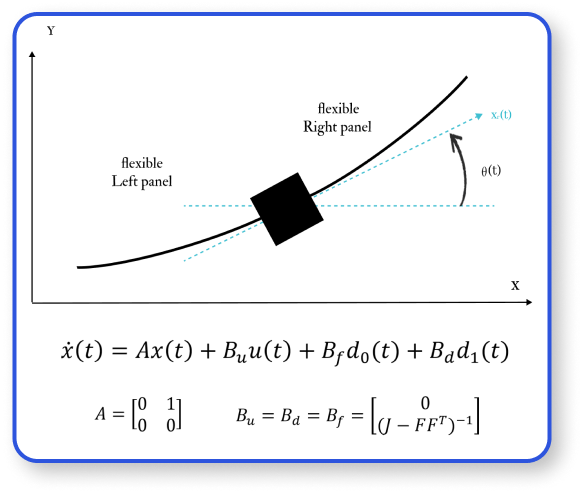

1 - One Axis
A composite control attitude stabilization of flexible spacecraft.
Problem Formulation
Over View
In this segment, we will design composite controllers based on only the PD controller,
DOBC and PD control and ESO with the PD control schemes for flexible spacecraft,
where DOBC and ESO can compensate the effect of vibration from flexible appendages,
and a PD controller can control the attitude of the spacecraft.
Simulations for a flexible spacecraft shows that the performance of attitude control system can be guaranteed
by the proposed methods.